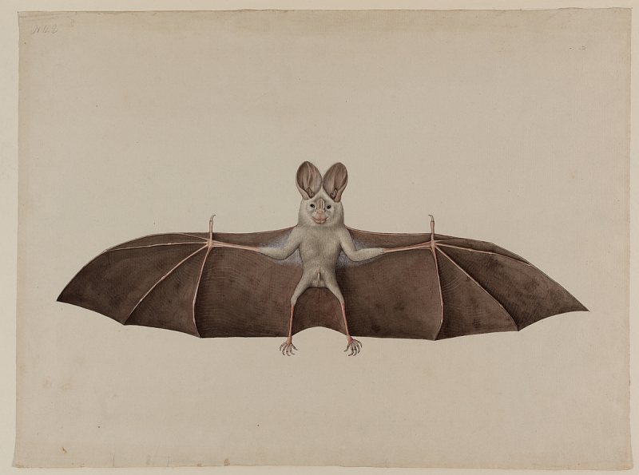

About Us
We are a team dedicated to making the best bat cookies ever! Cookies for bats? Bat-shaped cookies? Who knows!
Batastic Art

Bat's post delivery by schastlivaya-ch on DeviantArt
For the witchcraft challenge. His name is Ferdinand and he delivers witch's letter with agreement to visit sabbath

Floral chiroptera
A large bat meandering through flowers

Asian Lesser False Vampire Bat
Watercolor on paper; Kolkata (Calcutta), West Bengal state, India; ca. 1790. For the British men and women who went to India, the study of natural history was both scientific inquiry and fashionable pastime. They trained Indian artists, often skilled court painters seeking new patronage, to record the country's flora and fauna with scientific precision. The elegantly composed
Contact Us